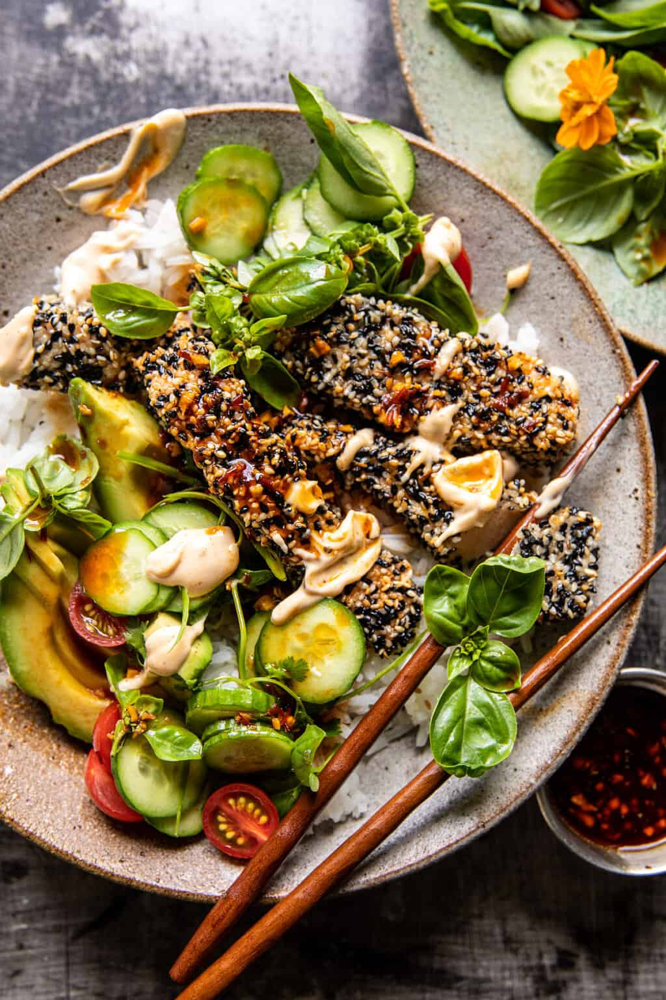

Spicy Ginger Sesame Crusted Salmon Bowls

Description
Slightly spicy and crispy roasted salmon, breaded in nutty flavored toasted sesame seeds, and drizzled with a ginger soy sauce. Serve the salmon over bowls of steamed rice with a fresh avocado herb salad, and finish with a creamy spicy mayo. These colorful and fresh salmon bowls might seem involved, but they’re actually simple to make and full of so much flavor.
Ingredients
- 4 salmon filets, cut into bite-size chunks
- 1 egg white
- 1/2 cup sesame seeds
- olive oil, for drizzling
- 1/4 cup tamari or soy sauce
- 3 tablespoons honey
- 1-2 tablespoons chili sauce
- 2 tablespoon toasted sesame oil
- 1 tablespoon grated fresh ginger
- 3-4 cups cooked rice
Herb Salad
- 2 avocados, diced
- 2 small cucumbers, chopped
- 1/2 cup fresh basil, chopped
- 1/2 cup fresh cilantro, chopped
- 1/2 cup cherry tomatoes, halved
- 2 tablespoons lemon or lime juice
- kosher salt
Spicy Mayo
- 1/2 cup mayo
- 1-2 tablespoons sriracha
- 2 teaspoons toasted sesame oil
Steps
- Preheat the oven to 450° F. Grease a baking sheet with olive oil.
- Place the sesame seeds in a shallow bowl. Add the egg white to a separate bowl. Toss each piece of salmon through the egg, then coat in seeds. Place on the prepared baking sheet in a single layer.
- Drizzle the salmon with olive oil. Bake 10-15 minutes or until the salmon is cooked to your liking.
- In a small bowl, whisk together the tamari, honey, chili sauce, toasted sesame oil, and ginger. Set the sauce aside for serving.
- To make the salad. Combine all ingredients in a bowl. Season with salt.
- For the spicy mayo, combine all ingredients in a bowl.
- Spoon the salmon over the bowls of rice. Top with the herb salad and drizzle the soy ginger sauce over everything. Add a dollop of spicy mayo. Enjoy!
Source: Half-Baked Harvest